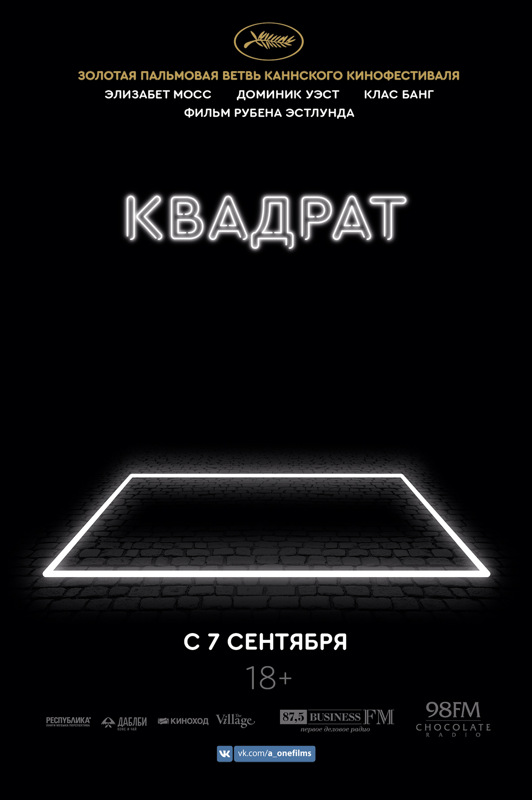

«Speaking in Code» — американский документальный фильм о техномузыкантах Modeselektor, Wighnomy Brothers, Philip Sherburne, Monolake и David Day. «Квадрат» — франко-русский документальный фильм о профессии техно-диджея. «Berlin Calling» — немецкий игровой фильм о диджее и композиторе Ickarus (Paul Kalkbrenner). «Sounds Like Techno» – австралийский документальный фильм о техно, подготовленный компанией Australian Broadcasting Corporation.
